Ablations of AlphaFold3
In this notebook, we perform ablations of AlphaFold3 input channels, to determine the most significant contributors to antigen specicifity prediction.
[1]:
import collections
import itertools
import IPython.display as ipy_display
import matplotlib.pyplot as plt
import numpy as np
import pandas as pd
import pingouin as pg
import seaborn as sns
from matplotlib.axes import Axes
from matplotlib.ticker import PercentFormatter
from scipy import stats
from sklearn.metrics import auc, precision_recall_curve, roc_auc_score
[ ]:
ABLATIONS = 'no_unpaired_msas', 'no_paired_msas', 'no_templates'
possible_ablations = [
combos for combo_size in range(1, len(ABLATIONS) + 1) for combos in itertools.combinations(ABLATIONS, combo_size)
]
Antigen Specificity
[3]:
def calculate_performance(pae_scores: pd.Series, labels: pd.Series) -> pd.Series:
roc_auc = 1 - roc_auc_score(labels, pae_scores)
roc_auc01 = 1 - roc_auc_score(labels, pae_scores, max_fpr=0.1)
precision, recall, _ = precision_recall_curve(labels, pae_scores)
pr_auc = 1 - auc(recall, precision)
return pd.Series({'roc_auc': roc_auc, 'roc_auc_01': roc_auc01, 'pr_auc': pr_auc})
def format_metric_name(metric_name: str) -> str:
return metric_name.upper().replace('_01', ' 0.1').replace('_', '-')
[ ]:
def sort_ablations(df: pd.DataFrame) -> pd.DataFrame:
return df.sort_index(
key=lambda idx: idx.map(
lambda name: (
next(i for i, entry in enumerate(possible_ablations) if name == entry)
if isinstance(name, tuple)
else -1
)
)
)
[5]:
sequences_1500 = pd.read_csv('../data/interim/sequences_sample_1500.csv', index_col='index')
sequences_1500['fold'] = sequences_1500['fold'].astype(str)
[6]:
af3_confidence_scores = pd.read_csv('../data/processed/confidence_scores_af3_af3_tcrmodel2_1500.csv')
af3_confidence_scores['top_rank'] = False
af3_confidence_scores.loc[af3_confidence_scores.groupby('name')['ranking_score'].idxmax(), 'top_rank'] = True
af3_confidence_scores['ablations'] = ''
ablation_confidence_scores = []
for ablations in possible_ablations:
ablations_name = '_'.join(ablations)
confidence_scores = pd.read_csv(f'../data/interim/confidence_scores_af3_af3_tcrmodel2_{ablations_name}_1500.csv')
confidence_scores['top_rank'] = False
confidence_scores.loc[confidence_scores.groupby('name')['ranking_score'].idxmax(), 'top_rank'] = True
confidence_scores['ablations'] = [ablations for _ in range(len(confidence_scores))]
ablation_confidence_scores.append(confidence_scores)
confidence_scores = pd.concat([af3_confidence_scores, *ablation_confidence_scores]).reset_index(drop=True)
[7]:
confidence_scores = confidence_scores.merge(sequences_1500, how='left', left_on='name', right_index=True)
Overall
[8]:
metric_scores = confidence_scores.groupby('ablations', dropna=False).apply(
lambda group: calculate_performance(group['cdr_pmhc_pae_score'], group['label']), include_groups=False
)
metric_scores = sort_ablations(metric_scores)
metric_scores_top_rank = (
confidence_scores.query('top_rank')
.groupby('ablations', dropna=False)
.apply(lambda group: calculate_performance(group['cdr_pmhc_pae_score'], group['label']), include_groups=False)
)
metric_scores_top_rank = sort_ablations(metric_scores_top_rank)
print('All')
ipy_display.display(metric_scores)
print()
print('Top Ranked')
ipy_display.display(metric_scores_top_rank)
All
| roc_auc | roc_auc_01 | pr_auc | |
|---|---|---|---|
| ablations | |||
| 0.600320 | 0.502683 | 0.551116 | |
| (no_unpaired_msas,) | 0.588385 | 0.505176 | 0.550498 |
| (no_paired_msas,) | 0.609911 | 0.504399 | 0.558316 |
| (no_templates,) | 0.611813 | 0.506368 | 0.563316 |
| (no_unpaired_msas, no_paired_msas) | 0.534675 | 0.505075 | 0.527168 |
| (no_unpaired_msas, no_templates) | 0.607471 | 0.508243 | 0.562761 |
| (no_paired_msas, no_templates) | 0.614985 | 0.505059 | 0.564242 |
| (no_unpaired_msas, no_paired_msas, no_templates) | 0.469072 | 0.496747 | 0.480077 |
Top Ranked
| roc_auc | roc_auc_01 | pr_auc | |
|---|---|---|---|
| ablations | |||
| 0.601319 | 0.504065 | 0.551730 | |
| (no_unpaired_msas,) | 0.587936 | 0.506124 | 0.550978 |
| (no_paired_msas,) | 0.613895 | 0.505806 | 0.558501 |
| (no_templates,) | 0.611984 | 0.505301 | 0.561842 |
| (no_unpaired_msas, no_paired_msas) | 0.540357 | 0.499640 | 0.523986 |
| (no_unpaired_msas, no_templates) | 0.607488 | 0.508959 | 0.564596 |
| (no_paired_msas, no_templates) | 0.615680 | 0.505787 | 0.563064 |
| (no_unpaired_msas, no_paired_msas, no_templates) | 0.475170 | 0.499995 | 0.489015 |
Bootstrap
[9]:
NUM_SAMPLES = 25
SAMPLE_SIZE = 500
names = confidence_scores['name'].unique()
rng = np.random.default_rng(123)
samples_metric_scores = []
samples_metric_scores_top_rank = []
for sample_num in range(1, NUM_SAMPLES + 1):
sample_names = rng.choice(names, SAMPLE_SIZE)
sample = confidence_scores[confidence_scores['name'].isin(sample_names)]
sample_metric_scores = (
sample.groupby('ablations', dropna=False)
.apply(lambda group: calculate_performance(group['cdr_pmhc_pae_score'], group['label']), include_groups=False)
.reset_index()
)
sample_metric_scores['sample_num'] = sample_num
samples_metric_scores.append(sample_metric_scores)
sample_metric_scores_top_rank = (
sample.query('top_rank')
.groupby('ablations', dropna=False)
.apply(lambda group: calculate_performance(group['cdr_pmhc_pae_score'], group['label']), include_groups=False)
.reset_index()
)
sample_metric_scores_top_rank['sample_num'] = sample_num
samples_metric_scores_top_rank.append(sample_metric_scores_top_rank)
samples_metric_scores = pd.concat(samples_metric_scores).reset_index(drop=True)
samples_metric_scores_top_rank = pd.concat(samples_metric_scores_top_rank).reset_index(drop=True)
[ ]:
for metric_name in ('roc_auc', 'roc_auc_01', 'pr_auc'):
fig, axes = plt.subplots(1, 2, figsize=(10, 5))
fig.suptitle('Structure Prediction Methods Antigen Specificity (Bootstrapped)')
for i, (ax, title, data) in enumerate(
zip(axes, ('All', 'Top Ranked'), (samples_metric_scores, samples_metric_scores_top_rank), strict=True)
):
sns.stripplot(
data,
x='ablations',
y=metric_name,
order=['', *possible_ablations],
color='grey',
zorder=1,
marker='o',
size=4,
edgecolor='black',
linewidth=1,
alpha=0.70,
ax=ax,
)
sns.boxplot(
data, x='ablations', y=metric_name, order=['', *possible_ablations], boxprops={'alpha': 0.85}, ax=ax
)
ax.axhline(0.5, color='r', linestyle='dashed')
ax.set_title(title)
ax.set_xlabel('')
ax.set_ylim(0.4, 0.7)
ax.set_xticks(ax.get_xticks())
ax.set_xticklabels(ax.get_xticklabels(), rotation=270)
if i == 0:
ax.set_ylabel(format_metric_name(metric_name))
else:
ax.set_ylabel('')
plt.show()
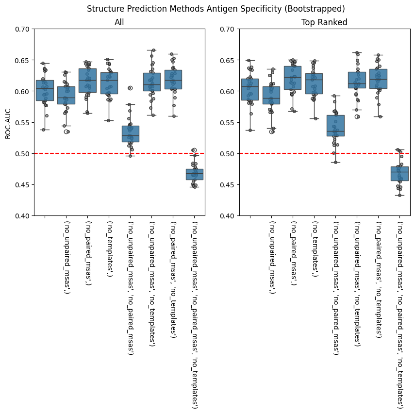
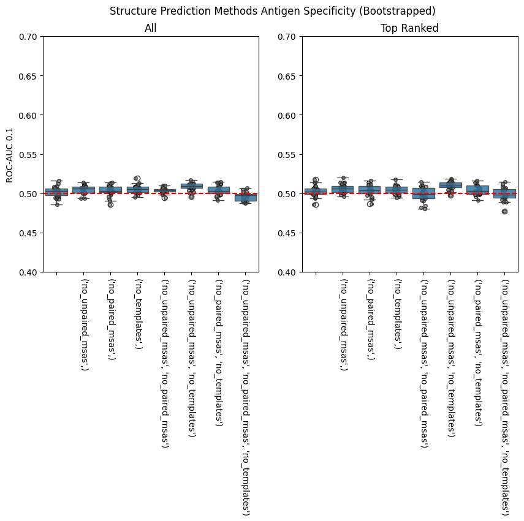
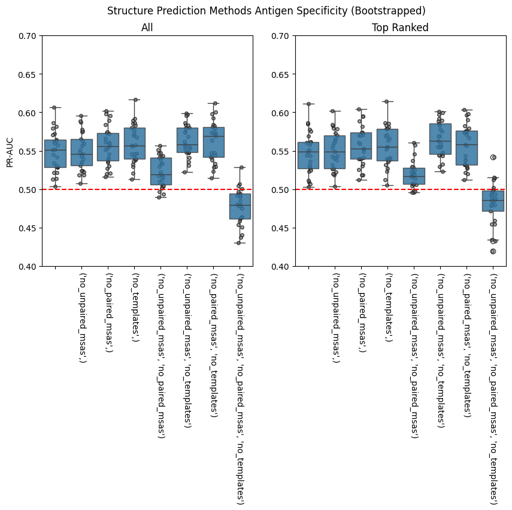
[11]:
sns.FacetGrid(
samples_metric_scores.melt(
id_vars=['ablations', 'sample_num'],
value_vars=['roc_auc', 'roc_auc_01', 'pr_auc'],
var_name='metric_name',
value_name='score',
),
col='ablations',
row='metric_name',
sharex=False,
).map(sns.histplot, 'score')
sns.FacetGrid(
samples_metric_scores_top_rank.melt(
id_vars=['ablations', 'sample_num'],
value_vars=['roc_auc', 'roc_auc_01', 'pr_auc'],
var_name='metric_name',
value_name='score',
),
col='ablations',
row='metric_name',
sharex=False,
).map(sns.histplot, 'score')
plt.show()
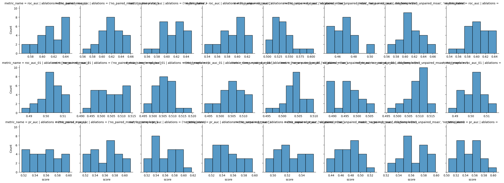
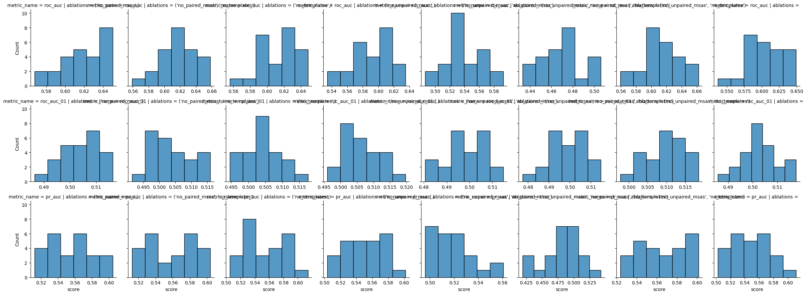
[ ]:
def statistics_normal(data: pd.DataFrame, metric_name: str) -> tuple[pd.DataFrame, pd.DataFrame]:
overall = pg.anova(data, dv=metric_name, between='ablations')
groups = list(data.groupby('ablations', dropna=False)[metric_name])
significance_level = 0.05 / len(groups)
post_hoc = collections.defaultdict(list)
for (group1_name, group1), (group2_name, group2) in itertools.combinations(groups, 2):
stat, p_val = stats.ttest_ind(group1, group2, alternative='two-sided')
post_hoc['group1'].append(group1_name)
post_hoc['group2'].append(group2_name)
post_hoc['stat'].append(stat)
post_hoc['p_val'].append(p_val)
post_hoc['signficant'].append(p_val < significance_level)
return overall, pd.DataFrame(post_hoc)
[13]:
for metric_name in ('roc_auc', 'roc_auc_01', 'pr_auc'):
print(format_metric_name(metric_name))
for title, data in zip(('All', 'Top Ranked'), (samples_metric_scores, samples_metric_scores_top_rank), strict=True):
print(title)
overall, post_hoc = statistics_normal(data, metric_name)
ipy_display.display(overall)
ipy_display.display(post_hoc)
print()
ROC-AUC
All
| Source | ddof1 | ddof2 | F | p-unc | np2 | |
|---|---|---|---|---|---|---|
| 0 | ablations | 7 | 192 | 130.788631 | 1.543409e-69 | 0.82664 |
| group1 | group2 | stat | p_val | signficant | |
|---|---|---|---|---|---|
| 0 | (no_paired_msas, no_templates) | (no_paired_msas,) | 0.474729 | 6.371333e-01 | False |
| 1 | (no_paired_msas, no_templates) | (no_templates,) | 0.794956 | 4.305523e-01 | False |
| 2 | (no_paired_msas, no_templates) | (no_unpaired_msas, no_paired_msas, no_templates) | 26.923429 | 1.281234e-30 | True |
| 3 | (no_paired_msas, no_templates) | (no_unpaired_msas, no_paired_msas) | 12.396753 | 1.423362e-16 | True |
| 4 | (no_paired_msas, no_templates) | (no_unpaired_msas, no_templates) | 0.778738 | 4.399562e-01 | False |
| 5 | (no_paired_msas, no_templates) | (no_unpaired_msas,) | 3.904254 | 2.947050e-04 | True |
| 6 | (no_paired_msas, no_templates) | 2.312462 | 2.508565e-02 | False | |
| 7 | (no_paired_msas,) | (no_templates,) | 0.318253 | 7.516733e-01 | False |
| 8 | (no_paired_msas,) | (no_unpaired_msas, no_paired_msas, no_templates) | 26.115435 | 5.046971e-30 | True |
| 9 | (no_paired_msas,) | (no_unpaired_msas, no_paired_msas) | 11.849841 | 7.358626e-16 | True |
| 10 | (no_paired_msas,) | (no_unpaired_msas, no_templates) | 0.310758 | 7.573303e-01 | False |
| 11 | (no_paired_msas,) | (no_unpaired_msas,) | 3.418514 | 1.292768e-03 | True |
| 12 | (no_paired_msas,) | 1.842829 | 7.153427e-02 | False | |
| 13 | (no_templates,) | (no_unpaired_msas, no_paired_msas, no_templates) | 25.731927 | 9.801170e-30 | True |
| 14 | (no_templates,) | (no_unpaired_msas, no_paired_msas) | 11.532145 | 1.945140e-15 | True |
| 15 | (no_templates,) | (no_unpaired_msas, no_templates) | -0.001796 | 9.985746e-01 | False |
| 16 | (no_templates,) | (no_unpaired_msas,) | 3.106456 | 3.176125e-03 | True |
| 17 | (no_templates,) | 1.535027 | 1.313430e-01 | False | |
| 18 | (no_unpaired_msas, no_paired_msas, no_templates) | (no_unpaired_msas, no_paired_msas) | -11.791212 | 8.795820e-16 | True |
| 19 | (no_unpaired_msas, no_paired_msas, no_templates) | (no_unpaired_msas, no_templates) | -25.078162 | 3.099920e-29 | True |
| 20 | (no_unpaired_msas, no_paired_msas, no_templates) | (no_unpaired_msas,) | -21.309209 | 4.084644e-26 | True |
| 21 | (no_unpaired_msas, no_paired_msas, no_templates) | -22.717364 | 2.484296e-27 | True | |
| 22 | (no_unpaired_msas, no_paired_msas) | (no_unpaired_msas, no_templates) | -11.328740 | 3.649290e-15 | True |
| 23 | (no_unpaired_msas, no_paired_msas) | (no_unpaired_msas,) | -8.207873 | 1.070324e-10 | True |
| 24 | (no_unpaired_msas, no_paired_msas) | -9.623296 | 8.768099e-13 | True | |
| 25 | (no_unpaired_msas, no_templates) | (no_unpaired_msas,) | 3.054720 | 3.670635e-03 | True |
| 26 | (no_unpaired_msas, no_templates) | 1.511018 | 1.373398e-01 | False | |
| 27 | (no_unpaired_msas,) | -1.501232 | 1.398457e-01 | False |
Top Ranked
| Source | ddof1 | ddof2 | F | p-unc | np2 | |
|---|---|---|---|---|---|---|
| 0 | ablations | 7 | 192 | 123.592005 | 1.314015e-67 | 0.818379 |
| group1 | group2 | stat | p_val | signficant | |
|---|---|---|---|---|---|
| 0 | (no_paired_msas, no_templates) | (no_paired_msas,) | -0.061518 | 9.512018e-01 | False |
| 1 | (no_paired_msas, no_templates) | (no_templates,) | 0.884129 | 3.810338e-01 | False |
| 2 | (no_paired_msas, no_templates) | (no_unpaired_msas, no_paired_msas, no_templates) | 24.522176 | 8.424561e-29 | True |
| 3 | (no_paired_msas, no_templates) | (no_unpaired_msas, no_paired_msas) | 11.476754 | 2.307458e-15 | True |
| 4 | (no_paired_msas, no_templates) | (no_unpaired_msas, no_templates) | 0.691123 | 4.928173e-01 | False |
| 5 | (no_paired_msas, no_templates) | (no_unpaired_msas,) | 3.988495 | 2.260893e-04 | True |
| 6 | (no_paired_msas, no_templates) | 2.111874 | 3.992788e-02 | False | |
| 7 | (no_paired_msas,) | (no_templates,) | 0.946191 | 3.487901e-01 | False |
| 8 | (no_paired_msas,) | (no_unpaired_msas, no_paired_msas, no_templates) | 24.586317 | 7.499431e-29 | True |
| 9 | (no_paired_msas,) | (no_unpaired_msas, no_paired_msas) | 11.535130 | 1.927337e-15 | True |
| 10 | (no_paired_msas,) | (no_unpaired_msas, no_templates) | 0.750424 | 4.566626e-01 | False |
| 11 | (no_paired_msas,) | (no_unpaired_msas,) | 4.047561 | 1.874895e-04 | True |
| 12 | (no_paired_msas,) | 2.170031 | 3.498434e-02 | False | |
| 13 | (no_templates,) | (no_unpaired_msas, no_paired_msas, no_templates) | 23.856262 | 2.862918e-28 | True |
| 14 | (no_templates,) | (no_unpaired_msas, no_paired_msas) | 10.733104 | 2.375080e-14 | True |
| 15 | (no_templates,) | (no_unpaired_msas, no_templates) | -0.154822 | 8.776105e-01 | False |
| 16 | (no_templates,) | (no_unpaired_msas,) | 3.173157 | 2.630661e-03 | True |
| 17 | (no_templates,) | 1.293742 | 2.019456e-01 | False | |
| 18 | (no_unpaired_msas, no_paired_msas, no_templates) | (no_unpaired_msas, no_paired_msas) | -11.127414 | 6.838372e-15 | True |
| 19 | (no_unpaired_msas, no_paired_msas, no_templates) | (no_unpaired_msas, no_templates) | -22.769152 | 2.247430e-27 | True |
| 20 | (no_unpaired_msas, no_paired_msas, no_templates) | (no_unpaired_msas,) | -19.232207 | 3.380956e-24 | True |
| 21 | (no_unpaired_msas, no_paired_msas, no_templates) | -20.768933 | 1.244980e-25 | True | |
| 22 | (no_unpaired_msas, no_paired_msas) | (no_unpaired_msas, no_templates) | -10.431697 | 6.234250e-14 | True |
| 23 | (no_unpaired_msas, no_paired_msas) | (no_unpaired_msas,) | -7.251254 | 3.032015e-09 | True |
| 24 | (no_unpaired_msas, no_paired_msas) | -8.874983 | 1.083979e-11 | True | |
| 25 | (no_unpaired_msas, no_templates) | (no_unpaired_msas,) | 3.188491 | 2.518398e-03 | True |
| 26 | (no_unpaired_msas, no_templates) | 1.387271 | 1.717671e-01 | False | |
| 27 | (no_unpaired_msas,) | -1.748336 | 8.679946e-02 | False |
ROC-AUC 0.1
All
| Source | ddof1 | ddof2 | F | p-unc | np2 | |
|---|---|---|---|---|---|---|
| 0 | ablations | 7 | 192 | 10.02856 | 1.153289e-10 | 0.267734 |
| group1 | group2 | stat | p_val | signficant | |
|---|---|---|---|---|---|
| 0 | (no_paired_msas, no_templates) | (no_paired_msas,) | 0.783502 | 4.371813e-01 | False |
| 1 | (no_paired_msas, no_templates) | (no_templates,) | -0.646228 | 5.212099e-01 | False |
| 2 | (no_paired_msas, no_templates) | (no_unpaired_msas, no_paired_msas, no_templates) | 4.946921 | 9.656869e-06 | True |
| 3 | (no_paired_msas, no_templates) | (no_unpaired_msas, no_paired_msas) | 0.660760 | 5.119252e-01 | False |
| 4 | (no_paired_msas, no_templates) | (no_unpaired_msas, no_templates) | -2.453138 | 1.784483e-02 | False |
| 5 | (no_paired_msas, no_templates) | (no_unpaired_msas,) | -0.219590 | 8.271217e-01 | False |
| 6 | (no_paired_msas, no_templates) | 1.387561 | 1.716791e-01 | False | |
| 7 | (no_paired_msas,) | (no_templates,) | -1.498613 | 1.405226e-01 | False |
| 8 | (no_paired_msas,) | (no_unpaired_msas, no_paired_msas, no_templates) | 3.992348 | 2.233525e-04 | True |
| 9 | (no_paired_msas,) | (no_unpaired_msas, no_paired_msas) | -0.331422 | 7.417684e-01 | False |
| 10 | (no_paired_msas,) | (no_unpaired_msas, no_templates) | -3.293261 | 1.864116e-03 | True |
| 11 | (no_paired_msas,) | (no_unpaired_msas,) | -1.072581 | 2.888222e-01 | False |
| 12 | (no_paired_msas,) | 0.596842 | 5.534176e-01 | False | |
| 13 | (no_templates,) | (no_unpaired_msas, no_paired_msas, no_templates) | 6.346031 | 7.407514e-08 | True |
| 14 | (no_templates,) | (no_unpaired_msas, no_paired_msas) | 1.657558 | 1.039292e-01 | False |
| 15 | (no_templates,) | (no_unpaired_msas, no_templates) | -2.052645 | 4.558037e-02 | False |
| 16 | (no_templates,) | (no_unpaired_msas,) | 0.477279 | 6.353294e-01 | False |
| 17 | (no_templates,) | 2.162492 | 3.559320e-02 | False | |
| 18 | (no_unpaired_msas, no_paired_msas, no_templates) | (no_unpaired_msas, no_paired_msas) | -5.857382 | 4.137260e-07 | True |
| 19 | (no_unpaired_msas, no_paired_msas, no_templates) | (no_unpaired_msas, no_templates) | -8.635060 | 2.458117e-11 | True |
| 20 | (no_unpaired_msas, no_paired_msas, no_templates) | (no_unpaired_msas,) | -5.797482 | 5.103719e-07 | True |
| 21 | (no_unpaired_msas, no_paired_msas, no_templates) | -3.314882 | 1.750835e-03 | True | |
| 22 | (no_unpaired_msas, no_paired_msas) | (no_unpaired_msas, no_templates) | -4.232176 | 1.037230e-04 | True |
| 23 | (no_unpaired_msas, no_paired_msas) | (no_unpaired_msas,) | -1.066510 | 2.915281e-01 | False |
| 24 | (no_unpaired_msas, no_paired_msas) | 1.083756 | 2.838868e-01 | False | |
| 25 | (no_unpaired_msas, no_templates) | (no_unpaired_msas,) | 2.522165 | 1.503441e-02 | False |
| 26 | (no_unpaired_msas, no_templates) | 3.970511 | 2.392972e-04 | True | |
| 27 | (no_unpaired_msas,) | 1.731937 | 8.970749e-02 | False |
Top Ranked
| Source | ddof1 | ddof2 | F | p-unc | np2 | |
|---|---|---|---|---|---|---|
| 0 | ablations | 7 | 192 | 6.244112 | 0.000001 | 0.185436 |
| group1 | group2 | stat | p_val | signficant | |
|---|---|---|---|---|---|
| 0 | (no_paired_msas, no_templates) | (no_paired_msas,) | 0.115916 | 0.908203 | False |
| 1 | (no_paired_msas, no_templates) | (no_templates,) | -0.127065 | 0.899420 | False |
| 2 | (no_paired_msas, no_templates) | (no_unpaired_msas, no_paired_msas, no_templates) | 2.272507 | 0.027574 | False |
| 3 | (no_paired_msas, no_templates) | (no_unpaired_msas, no_paired_msas) | 2.430170 | 0.018880 | False |
| 4 | (no_paired_msas, no_templates) | (no_unpaired_msas, no_templates) | -3.205727 | 0.002398 | True |
| 5 | (no_paired_msas, no_templates) | (no_unpaired_msas,) | -1.092625 | 0.280012 | False |
| 6 | (no_paired_msas, no_templates) | 0.727657 | 0.470358 | False | |
| 7 | (no_paired_msas,) | (no_templates,) | -0.241911 | 0.809880 | False |
| 8 | (no_paired_msas,) | (no_unpaired_msas, no_paired_msas, no_templates) | 2.054121 | 0.045431 | False |
| 9 | (no_paired_msas,) | (no_unpaired_msas, no_paired_msas) | 2.220927 | 0.031109 | False |
| 10 | (no_paired_msas,) | (no_unpaired_msas, no_templates) | -3.079128 | 0.003429 | True |
| 11 | (no_paired_msas,) | (no_unpaired_msas,) | -1.132656 | 0.262985 | False |
| 12 | (no_paired_msas,) | 0.569781 | 0.571484 | False | |
| 13 | (no_templates,) | (no_unpaired_msas, no_paired_msas, no_templates) | 2.526489 | 0.014873 | False |
| 14 | (no_templates,) | (no_unpaired_msas, no_paired_msas) | 2.669840 | 0.010325 | False |
| 15 | (no_templates,) | (no_unpaired_msas, no_templates) | -3.416269 | 0.001301 | True |
| 16 | (no_templates,) | (no_unpaired_msas,) | -1.069106 | 0.290369 | False |
| 17 | (no_templates,) | 0.909316 | 0.367727 | False | |
| 18 | (no_unpaired_msas, no_paired_msas, no_templates) | (no_unpaired_msas, no_paired_msas) | 0.252894 | 0.801430 | False |
| 19 | (no_unpaired_msas, no_paired_msas, no_templates) | (no_unpaired_msas, no_templates) | -5.108588 | 0.000006 | True |
| 20 | (no_unpaired_msas, no_paired_msas, no_templates) | (no_unpaired_msas,) | -3.290044 | 0.001882 | True |
| 21 | (no_unpaired_msas, no_paired_msas, no_templates) | -1.574412 | 0.121961 | False | |
| 22 | (no_unpaired_msas, no_paired_msas) | (no_unpaired_msas, no_templates) | -5.096203 | 0.000006 | True |
| 23 | (no_unpaired_msas, no_paired_msas) | (no_unpaired_msas,) | -3.389315 | 0.001409 | True |
| 24 | (no_unpaired_msas, no_paired_msas) | -1.767071 | 0.083574 | False | |
| 25 | (no_unpaired_msas, no_templates) | (no_unpaired_msas,) | 2.219020 | 0.031247 | False |
| 26 | (no_unpaired_msas, no_templates) | 3.846487 | 0.000353 | True | |
| 27 | (no_unpaired_msas,) | 1.810658 | 0.076455 | False |
PR-AUC
All
| Source | ddof1 | ddof2 | F | p-unc | np2 | |
|---|---|---|---|---|---|---|
| 0 | ablations | 7 | 192 | 36.076202 | 7.020156e-32 | 0.568086 |
| group1 | group2 | stat | p_val | signficant | |
|---|---|---|---|---|---|
| 0 | (no_paired_msas, no_templates) | (no_paired_msas,) | 0.738985 | 4.635148e-01 | False |
| 1 | (no_paired_msas, no_templates) | (no_templates,) | 0.368186 | 7.143530e-01 | False |
| 2 | (no_paired_msas, no_templates) | (no_unpaired_msas, no_paired_msas, no_templates) | 11.729428 | 1.062026e-15 | True |
| 3 | (no_paired_msas, no_templates) | (no_unpaired_msas, no_paired_msas) | 5.864362 | 4.037200e-07 | True |
| 4 | (no_paired_msas, no_templates) | (no_unpaired_msas, no_templates) | -0.221839 | 8.253802e-01 | False |
| 5 | (no_paired_msas, no_templates) | (no_unpaired_msas,) | 1.732452 | 8.961485e-02 | False |
| 6 | (no_paired_msas, no_templates) | 1.734347 | 8.927509e-02 | False | |
| 7 | (no_paired_msas,) | (no_templates,) | -0.375753 | 7.087563e-01 | False |
| 8 | (no_paired_msas,) | (no_unpaired_msas, no_paired_msas, no_templates) | 11.280879 | 4.234898e-15 | True |
| 9 | (no_paired_msas,) | (no_unpaired_msas, no_paired_msas) | 5.210243 | 3.925386e-06 | True |
| 10 | (no_paired_msas,) | (no_unpaired_msas, no_templates) | -1.050220 | 2.988758e-01 | False |
| 11 | (no_paired_msas,) | (no_unpaired_msas,) | 1.008272 | 3.183800e-01 | False |
| 12 | (no_paired_msas,) | 1.032640 | 3.069473e-01 | False | |
| 13 | (no_templates,) | (no_unpaired_msas, no_paired_msas, no_templates) | 11.586895 | 1.643598e-15 | True |
| 14 | (no_templates,) | (no_unpaired_msas, no_paired_msas) | 5.586924 | 1.065056e-06 | True |
| 15 | (no_templates,) | (no_unpaired_msas, no_templates) | -0.635639 | 5.280306e-01 | False |
| 16 | (no_templates,) | (no_unpaired_msas,) | 1.383561 | 1.728939e-01 | False |
| 17 | (no_templates,) | 1.395762 | 1.692093e-01 | False | |
| 18 | (no_unpaired_msas, no_paired_msas, no_templates) | (no_unpaired_msas, no_paired_msas) | -7.346726 | 2.166671e-09 | True |
| 19 | (no_unpaired_msas, no_paired_msas, no_templates) | (no_unpaired_msas, no_templates) | -13.356648 | 8.734620e-18 | True |
| 20 | (no_unpaired_msas, no_paired_msas, no_templates) | (no_unpaired_msas,) | -10.454530 | 5.792448e-14 | True |
| 21 | (no_unpaired_msas, no_paired_msas, no_templates) | -10.030979 | 2.288751e-13 | True | |
| 22 | (no_unpaired_msas, no_paired_msas) | (no_unpaired_msas, no_templates) | -6.974119 | 8.056479e-09 | True |
| 23 | (no_unpaired_msas, no_paired_msas) | (no_unpaired_msas,) | -4.191109 | 1.184250e-04 | True |
| 24 | (no_unpaired_msas, no_paired_msas) | -3.953377 | 2.525738e-04 | True | |
| 25 | (no_unpaired_msas, no_templates) | (no_unpaired_msas,) | 2.167004 | 3.522773e-02 | False |
| 26 | (no_unpaired_msas, no_templates) | 2.145600 | 3.699142e-02 | False | |
| 27 | (no_unpaired_msas,) | 0.058656 | 9.534698e-01 | False |
Top Ranked
| Source | ddof1 | ddof2 | F | p-unc | np2 | |
|---|---|---|---|---|---|---|
| 0 | ablations | 7 | 192 | 28.991888 | 4.688074e-27 | 0.513854 |
| group1 | group2 | stat | p_val | signficant | |
|---|---|---|---|---|---|
| 0 | (no_paired_msas, no_templates) | (no_paired_msas,) | 0.165098 | 8.695601e-01 | False |
| 1 | (no_paired_msas, no_templates) | (no_templates,) | 0.298944 | 7.662730e-01 | False |
| 2 | (no_paired_msas, no_templates) | (no_unpaired_msas, no_paired_msas, no_templates) | 9.464503 | 1.487290e-12 | True |
| 3 | (no_paired_msas, no_templates) | (no_unpaired_msas, no_paired_msas) | 5.790287 | 5.233961e-07 | True |
| 4 | (no_paired_msas, no_templates) | (no_unpaired_msas, no_templates) | -1.115516 | 2.701832e-01 | False |
| 5 | (no_paired_msas, no_templates) | (no_unpaired_msas,) | 0.936832 | 3.535350e-01 | False |
| 6 | (no_paired_msas, no_templates) | 1.233953 | 2.232283e-01 | False | |
| 7 | (no_paired_msas,) | (no_templates,) | 0.139232 | 8.898496e-01 | False |
| 8 | (no_paired_msas,) | (no_unpaired_msas, no_paired_msas, no_templates) | 9.563128 | 1.070811e-12 | True |
| 9 | (no_paired_msas,) | (no_unpaired_msas, no_paired_msas) | 5.827912 | 4.587577e-07 | True |
| 10 | (no_paired_msas,) | (no_unpaired_msas, no_templates) | -1.332968 | 1.888349e-01 | False |
| 11 | (no_paired_msas,) | (no_unpaired_msas,) | 0.793208 | 4.315604e-01 | False |
| 12 | (no_paired_msas,) | 1.104032 | 2.750833e-01 | False | |
| 13 | (no_templates,) | (no_unpaired_msas, no_paired_msas, no_templates) | 9.348889 | 2.189111e-12 | True |
| 14 | (no_templates,) | (no_unpaired_msas, no_paired_msas) | 5.592792 | 1.043499e-06 | True |
| 15 | (no_templates,) | (no_unpaired_msas, no_templates) | -1.466742 | 1.489679e-01 | False |
| 16 | (no_templates,) | (no_unpaired_msas,) | 0.644664 | 5.222145e-01 | False |
| 17 | (no_templates,) | 0.959885 | 3.419235e-01 | False | |
| 18 | (no_unpaired_msas, no_paired_msas, no_templates) | (no_unpaired_msas, no_paired_msas) | -5.536907 | 1.267662e-06 | True |
| 19 | (no_unpaired_msas, no_paired_msas, no_templates) | (no_unpaired_msas, no_templates) | -11.358705 | 3.325121e-15 | True |
| 20 | (no_unpaired_msas, no_paired_msas, no_templates) | (no_unpaired_msas,) | -8.925368 | 9.134099e-12 | True |
| 21 | (no_unpaired_msas, no_paired_msas, no_templates) | -8.209617 | 1.063880e-10 | True | |
| 22 | (no_unpaired_msas, no_paired_msas) | (no_unpaired_msas, no_templates) | -7.919853 | 2.910867e-10 | True |
| 23 | (no_unpaired_msas, no_paired_msas) | (no_unpaired_msas,) | -5.006121 | 7.895313e-06 | True |
| 24 | (no_unpaired_msas, no_paired_msas) | -4.291401 | 8.560308e-05 | True | |
| 25 | (no_unpaired_msas, no_templates) | (no_unpaired_msas,) | 2.195619 | 3.298568e-02 | False |
| 26 | (no_unpaired_msas, no_templates) | 2.449320 | 1.801336e-02 | False | |
| 27 | (no_unpaired_msas,) | 0.351877 | 7.264707e-01 | False |
By Fold
[ ]:
roc_aucs_by_fold = (
confidence_scores.groupby(['ablations', 'fold'], dropna=False)
.apply(lambda group: calculate_performance(group['cdr_pmhc_pae_score'], group['label']), include_groups=False)
.reset_index()
)
roc_aucs_by_fold_top_rank = (
confidence_scores.query('top_rank')
.groupby(['ablations', 'fold'], dropna=False)
.apply(lambda group: calculate_performance(group['cdr_pmhc_pae_score'], group['label']), include_groups=False)
.reset_index()
)
for metric_name in ('roc_auc', 'roc_auc_01', 'pr_auc'):
fig, axes = plt.subplots(1, 2, figsize=(10, 5))
for i, (ax, title, data) in enumerate(
zip(axes, ('All', 'Top Ranked'), (roc_aucs_by_fold, roc_aucs_by_fold_top_rank), strict=True)
):
sns.pointplot(data, x='ablations', y=metric_name, order=['', *possible_ablations], hue='fold', ax=ax)
sns.boxplot(
data, x='ablations', y=metric_name, order=['', *possible_ablations], boxprops={'alpha': 0.85}, ax=ax
)
ax.axhline(0.5, color='r', linestyle='dashed')
ax.set_title(title)
ax.set_xlabel('')
ax.set_xticks(ax.get_xticks())
ax.set_xticklabels(ax.get_xticklabels(), rotation=270)
handles, labels = ax.get_legend_handles_labels()
new_labels = [f'Fold {label}' for label in labels]
ax.legend(handles, new_labels)
if i == 0:
ax.set_ylabel(format_metric_name(metric_name))
else:
ax.set_ylabel('')
plt.show()
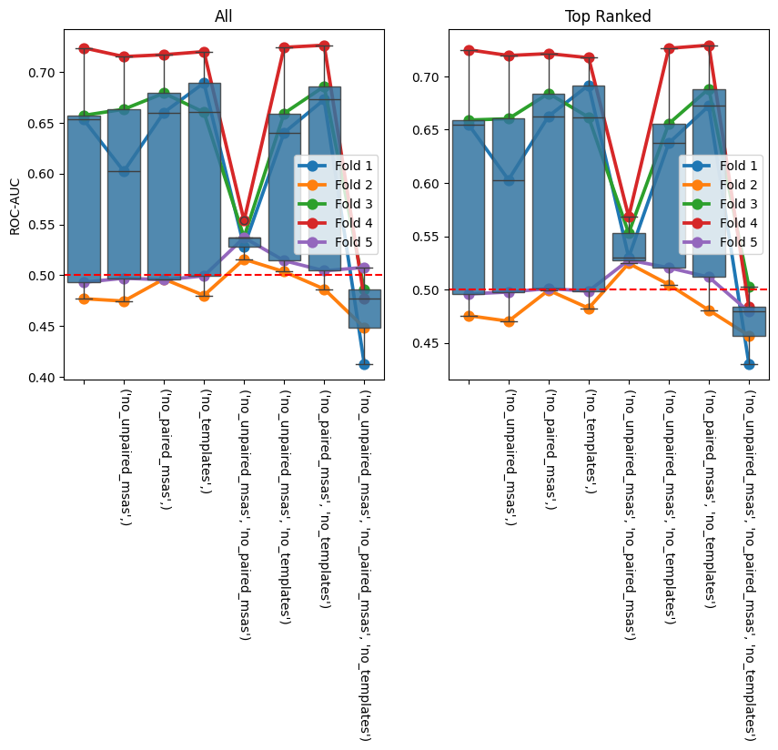
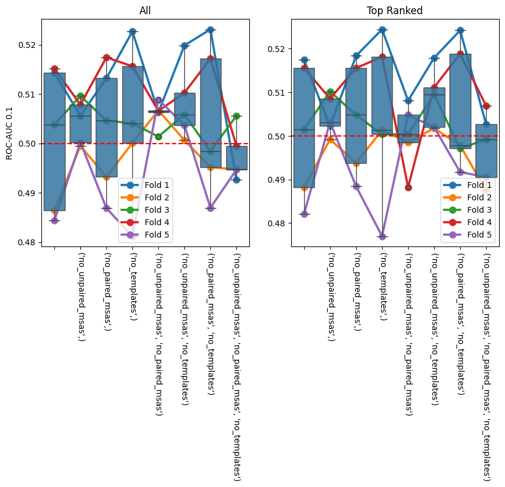
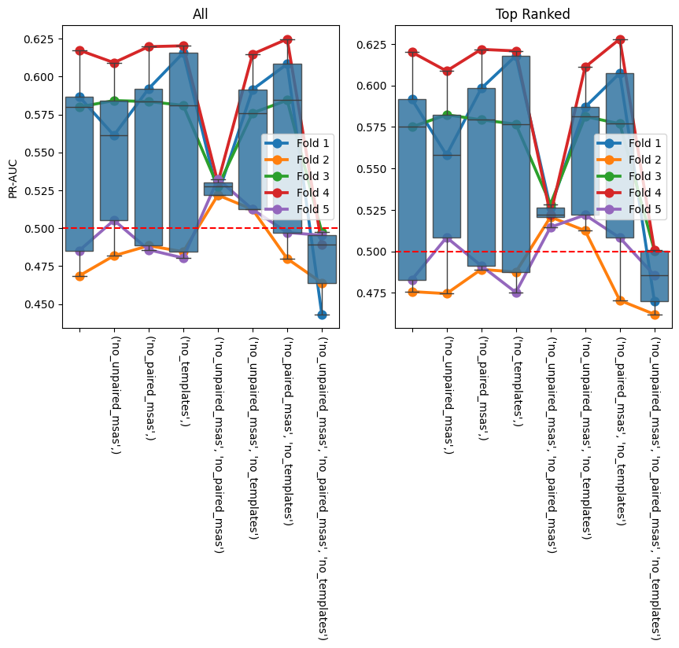
[15]:
sns.FacetGrid(
roc_aucs_by_fold.melt(
id_vars=['ablations', 'fold'],
value_vars=['roc_auc', 'roc_auc_01', 'pr_auc'],
var_name='metric_name',
value_name='score',
),
col='ablations',
row='metric_name',
sharex=False,
).map(sns.histplot, 'score')
sns.FacetGrid(
roc_aucs_by_fold_top_rank.melt(
id_vars=['ablations', 'fold'],
value_vars=['roc_auc', 'roc_auc_01', 'pr_auc'],
var_name='metric_name',
value_name='score',
),
col='ablations',
row='metric_name',
sharex=False,
).map(sns.histplot, 'score')
plt.show()
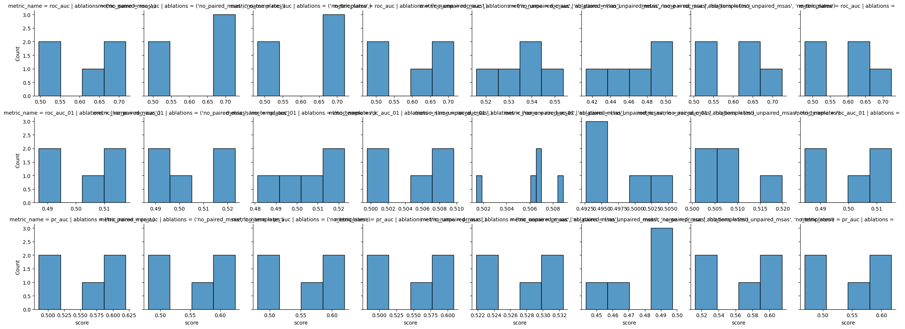
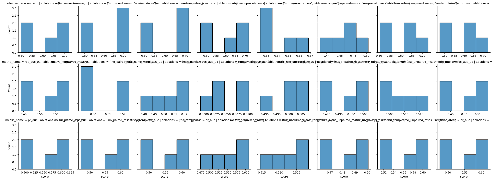
[ ]:
def statistics_non_parametric(data: pd.DataFrame, metric_name: str) -> tuple[pd.DataFrame, pd.DataFrame]:
overall = pg.friedman(data, dv=metric_name, within='ablations', subject='fold', method='f')
groups = list(data.set_index('fold').groupby('ablations')[metric_name])
groups = [(group_name, group.sort_index()) for group_name, group in groups]
significance_level = 0.05 / len(groups)
post_hoc = collections.defaultdict(list)
for (group1_name, group1), (group2_name, group2) in itertools.combinations(groups, 2):
stat, p_val = stats.wilcoxon(group1, group2, alternative='greater')
post_hoc['group1'].append(group1_name)
post_hoc['group2'].append(group2_name)
post_hoc['stat'].append(stat)
post_hoc['p_val'].append(p_val)
post_hoc['signficant'].append(p_val < significance_level)
return overall, pd.DataFrame(post_hoc)
[17]:
for metric_name in ('roc_auc', 'roc_auc_01', 'pr_auc'):
print(format_metric_name(metric_name))
for title, data in zip(('All', 'Top Ranked'), (roc_aucs_by_fold, roc_aucs_by_fold_top_rank), strict=True):
print(title)
overall, post_hoc = statistics_non_parametric(data, metric_name)
ipy_display.display(overall)
ipy_display.display(post_hoc)
print()
print()
ROC-AUC
All
| Source | W | ddof1 | ddof2 | F | p-unc | |
|---|---|---|---|---|---|---|
| Friedman | ablations | 0.36 | 6.6 | 26.4 | 2.25 | 0.064774 |
| group1 | group2 | stat | p_val | signficant | |
|---|---|---|---|---|---|
| 0 | (no_paired_msas, no_templates) | (no_paired_msas,) | 11.0 | 0.21875 | False |
| 1 | (no_paired_msas, no_templates) | (no_templates,) | 11.0 | 0.21875 | False |
| 2 | (no_paired_msas, no_templates) | (no_unpaired_msas, no_paired_msas, no_templates) | 14.0 | 0.06250 | False |
| 3 | (no_paired_msas, no_templates) | (no_unpaired_msas, no_paired_msas) | 12.0 | 0.15625 | False |
| 4 | (no_paired_msas, no_templates) | (no_unpaired_msas, no_templates) | 10.0 | 0.31250 | False |
| 5 | (no_paired_msas, no_templates) | (no_unpaired_msas,) | 15.0 | 0.03125 | False |
| 6 | (no_paired_msas, no_templates) | 15.0 | 0.03125 | False | |
| 7 | (no_paired_msas,) | (no_templates,) | 7.0 | 0.59375 | False |
| 8 | (no_paired_msas,) | (no_unpaired_msas, no_paired_msas, no_templates) | 14.0 | 0.06250 | False |
| 9 | (no_paired_msas,) | (no_unpaired_msas, no_paired_msas) | 12.0 | 0.15625 | False |
| 10 | (no_paired_msas,) | (no_unpaired_msas, no_templates) | 9.0 | 0.40625 | False |
| 11 | (no_paired_msas,) | (no_unpaired_msas,) | 14.0 | 0.06250 | False |
| 12 | (no_paired_msas,) | 13.0 | 0.09375 | False | |
| 13 | (no_templates,) | (no_unpaired_msas, no_paired_msas, no_templates) | 14.0 | 0.06250 | False |
| 14 | (no_templates,) | (no_unpaired_msas, no_paired_msas) | 12.0 | 0.15625 | False |
| 15 | (no_templates,) | (no_unpaired_msas, no_templates) | 6.0 | 0.68750 | False |
| 16 | (no_templates,) | (no_unpaired_msas,) | 13.0 | 0.09375 | False |
| 17 | (no_templates,) | 12.0 | 0.15625 | False | |
| 18 | (no_unpaired_msas, no_paired_msas, no_templates) | (no_unpaired_msas, no_paired_msas) | 0.0 | 1.00000 | False |
| 19 | (no_unpaired_msas, no_paired_msas, no_templates) | (no_unpaired_msas, no_templates) | 0.0 | 1.00000 | False |
| 20 | (no_unpaired_msas, no_paired_msas, no_templates) | (no_unpaired_msas,) | 1.0 | 0.96875 | False |
| 21 | (no_unpaired_msas, no_paired_msas, no_templates) | 1.0 | 0.96875 | False | |
| 22 | (no_unpaired_msas, no_paired_msas) | (no_unpaired_msas, no_templates) | 3.0 | 0.90625 | False |
| 23 | (no_unpaired_msas, no_paired_msas) | (no_unpaired_msas,) | 3.0 | 0.90625 | False |
| 24 | (no_unpaired_msas, no_paired_msas) | 3.0 | 0.90625 | False | |
| 25 | (no_unpaired_msas, no_templates) | (no_unpaired_msas,) | 14.0 | 0.06250 | False |
| 26 | (no_unpaired_msas, no_templates) | 12.0 | 0.15625 | False | |
| 27 | (no_unpaired_msas,) | 5.0 | 0.78125 | False |
Top Ranked
| Source | W | ddof1 | ddof2 | F | p-unc | |
|---|---|---|---|---|---|---|
| Friedman | ablations | 0.512381 | 6.6 | 26.4 | 4.203125 | 0.003526 |
| group1 | group2 | stat | p_val | signficant | |
|---|---|---|---|---|---|
| 0 | (no_paired_msas, no_templates) | (no_paired_msas,) | 10.0 | 0.31250 | False |
| 1 | (no_paired_msas, no_templates) | (no_templates,) | 10.0 | 0.31250 | False |
| 2 | (no_paired_msas, no_templates) | (no_unpaired_msas, no_paired_msas, no_templates) | 15.0 | 0.03125 | False |
| 3 | (no_paired_msas, no_templates) | (no_unpaired_msas, no_paired_msas) | 12.0 | 0.15625 | False |
| 4 | (no_paired_msas, no_templates) | (no_unpaired_msas, no_templates) | 10.0 | 0.31250 | False |
| 5 | (no_paired_msas, no_templates) | (no_unpaired_msas,) | 15.0 | 0.03125 | False |
| 6 | (no_paired_msas, no_templates) | 15.0 | 0.03125 | False | |
| 7 | (no_paired_msas,) | (no_templates,) | 10.0 | 0.31250 | False |
| 8 | (no_paired_msas,) | (no_unpaired_msas, no_paired_msas, no_templates) | 15.0 | 0.03125 | False |
| 9 | (no_paired_msas,) | (no_unpaired_msas, no_paired_msas) | 12.0 | 0.15625 | False |
| 10 | (no_paired_msas,) | (no_unpaired_msas, no_templates) | 9.0 | 0.40625 | False |
| 11 | (no_paired_msas,) | (no_unpaired_msas,) | 15.0 | 0.03125 | False |
| 12 | (no_paired_msas,) | 14.0 | 0.06250 | False | |
| 13 | (no_templates,) | (no_unpaired_msas, no_paired_msas, no_templates) | 15.0 | 0.03125 | False |
| 14 | (no_templates,) | (no_unpaired_msas, no_paired_msas) | 12.0 | 0.15625 | False |
| 15 | (no_templates,) | (no_unpaired_msas, no_templates) | 6.0 | 0.68750 | False |
| 16 | (no_templates,) | (no_unpaired_msas,) | 12.0 | 0.15625 | False |
| 17 | (no_templates,) | 11.0 | 0.21875 | False | |
| 18 | (no_unpaired_msas, no_paired_msas, no_templates) | (no_unpaired_msas, no_paired_msas) | 0.0 | 1.00000 | False |
| 19 | (no_unpaired_msas, no_paired_msas, no_templates) | (no_unpaired_msas, no_templates) | 0.0 | 1.00000 | False |
| 20 | (no_unpaired_msas, no_paired_msas, no_templates) | (no_unpaired_msas,) | 0.0 | 1.00000 | False |
| 21 | (no_unpaired_msas, no_paired_msas, no_templates) | 0.0 | 1.00000 | False | |
| 22 | (no_unpaired_msas, no_paired_msas) | (no_unpaired_msas, no_templates) | 3.0 | 0.90625 | False |
| 23 | (no_unpaired_msas, no_paired_msas) | (no_unpaired_msas,) | 3.0 | 0.90625 | False |
| 24 | (no_unpaired_msas, no_paired_msas) | 3.0 | 0.90625 | False | |
| 25 | (no_unpaired_msas, no_templates) | (no_unpaired_msas,) | 14.0 | 0.06250 | False |
| 26 | (no_unpaired_msas, no_templates) | 10.0 | 0.31250 | False | |
| 27 | (no_unpaired_msas,) | 3.0 | 0.90625 | False |
ROC-AUC 0.1
All
| Source | W | ddof1 | ddof2 | F | p-unc | |
|---|---|---|---|---|---|---|
| Friedman | ablations | 0.15619 | 6.6 | 26.4 | 0.740406 | 0.63327 |
| group1 | group2 | stat | p_val | signficant | |
|---|---|---|---|---|---|
| 0 | (no_paired_msas, no_templates) | (no_paired_msas,) | 9.0 | 0.40625 | False |
| 1 | (no_paired_msas, no_templates) | (no_templates,) | 8.0 | 0.50000 | False |
| 2 | (no_paired_msas, no_templates) | (no_unpaired_msas, no_paired_msas, no_templates) | 10.0 | 0.31250 | False |
| 3 | (no_paired_msas, no_templates) | (no_unpaired_msas, no_paired_msas) | 6.0 | 0.68750 | False |
| 4 | (no_paired_msas, no_templates) | (no_unpaired_msas, no_templates) | 4.0 | 0.84375 | False |
| 5 | (no_paired_msas, no_templates) | (no_unpaired_msas,) | 7.0 | 0.59375 | False |
| 6 | (no_paired_msas, no_templates) | 12.0 | 0.15625 | False | |
| 7 | (no_paired_msas,) | (no_templates,) | 6.0 | 0.68750 | False |
| 8 | (no_paired_msas,) | (no_unpaired_msas, no_paired_msas, no_templates) | 9.0 | 0.40625 | False |
| 9 | (no_paired_msas,) | (no_unpaired_msas, no_paired_msas) | 6.0 | 0.68750 | False |
| 10 | (no_paired_msas,) | (no_unpaired_msas, no_templates) | 3.0 | 0.90625 | False |
| 11 | (no_paired_msas,) | (no_unpaired_msas,) | 7.0 | 0.59375 | False |
| 12 | (no_paired_msas,) | 13.0 | 0.09375 | False | |
| 13 | (no_templates,) | (no_unpaired_msas, no_paired_msas, no_templates) | 11.0 | 0.21875 | False |
| 14 | (no_templates,) | (no_unpaired_msas, no_paired_msas) | 8.0 | 0.50000 | False |
| 15 | (no_templates,) | (no_unpaired_msas, no_templates) | 7.0 | 0.59375 | False |
| 16 | (no_templates,) | (no_unpaired_msas,) | 8.0 | 0.50000 | False |
| 17 | (no_templates,) | 12.0 | 0.15625 | False | |
| 18 | (no_unpaired_msas, no_paired_msas, no_templates) | (no_unpaired_msas, no_paired_msas) | 1.0 | 0.96875 | False |
| 19 | (no_unpaired_msas, no_paired_msas, no_templates) | (no_unpaired_msas, no_templates) | 0.0 | 1.00000 | False |
| 20 | (no_unpaired_msas, no_paired_msas, no_templates) | (no_unpaired_msas,) | 0.0 | 1.00000 | False |
| 21 | (no_unpaired_msas, no_paired_msas, no_templates) | 6.0 | 0.68750 | False | |
| 22 | (no_unpaired_msas, no_paired_msas) | (no_unpaired_msas, no_templates) | 7.0 | 0.59375 | False |
| 23 | (no_unpaired_msas, no_paired_msas) | (no_unpaired_msas,) | 9.0 | 0.40625 | False |
| 24 | (no_unpaired_msas, no_paired_msas) | 9.0 | 0.40625 | False | |
| 25 | (no_unpaired_msas, no_templates) | (no_unpaired_msas,) | 11.0 | 0.21875 | False |
| 26 | (no_unpaired_msas, no_templates) | 13.0 | 0.09375 | False | |
| 27 | (no_unpaired_msas,) | 10.0 | 0.31250 | False |
Top Ranked
/ceph/project/koohylab/bmcmaste/projects/tcr-pmhc-predicted-structures/.venv/lib/python3.11/site-packages/scipy/stats/_wilcoxon.py:199: UserWarning: Sample size too small for normal approximation.
temp = _wilcoxon_iv(x, y, zero_method, correction, alternative, method, axis)
| Source | W | ddof1 | ddof2 | F | p-unc | |
|---|---|---|---|---|---|---|
| Friedman | ablations | 0.227751 | 6.6 | 26.4 | 1.179678 | 0.347453 |
| group1 | group2 | stat | p_val | signficant | |
|---|---|---|---|---|---|
| 0 | (no_paired_msas, no_templates) | (no_paired_msas,) | 10.0 | 0.312500 | False |
| 1 | (no_paired_msas, no_templates) | (no_templates,) | 7.0 | 0.593750 | False |
| 2 | (no_paired_msas, no_templates) | (no_unpaired_msas, no_paired_msas, no_templates) | 13.0 | 0.093750 | False |
| 3 | (no_paired_msas, no_templates) | (no_unpaired_msas, no_paired_msas) | 9.0 | 0.406250 | False |
| 4 | (no_paired_msas, no_templates) | (no_unpaired_msas, no_templates) | 5.0 | 0.781250 | False |
| 5 | (no_paired_msas, no_templates) | (no_unpaired_msas,) | 7.0 | 0.593750 | False |
| 6 | (no_paired_msas, no_templates) | 13.0 | 0.093750 | False | |
| 7 | (no_paired_msas,) | (no_templates,) | 7.0 | 0.593750 | False |
| 8 | (no_paired_msas,) | (no_unpaired_msas, no_paired_msas, no_templates) | 14.0 | 0.062500 | False |
| 9 | (no_paired_msas,) | (no_unpaired_msas, no_paired_msas) | 9.0 | 0.406250 | False |
| 10 | (no_paired_msas,) | (no_unpaired_msas, no_templates) | 3.0 | 0.906250 | False |
| 11 | (no_paired_msas,) | (no_unpaired_msas,) | 8.0 | 0.500000 | False |
| 12 | (no_paired_msas,) | 10.0 | 0.033945 | False | |
| 13 | (no_templates,) | (no_unpaired_msas, no_paired_msas, no_templates) | 12.0 | 0.156250 | False |
| 14 | (no_templates,) | (no_unpaired_msas, no_paired_msas) | 7.0 | 0.232604 | False |
| 15 | (no_templates,) | (no_unpaired_msas, no_templates) | 5.0 | 0.781250 | False |
| 16 | (no_templates,) | (no_unpaired_msas,) | 7.0 | 0.593750 | False |
| 17 | (no_templates,) | 11.0 | 0.218750 | False | |
| 18 | (no_unpaired_msas, no_paired_msas, no_templates) | (no_unpaired_msas, no_paired_msas) | 5.0 | 0.781250 | False |
| 19 | (no_unpaired_msas, no_paired_msas, no_templates) | (no_unpaired_msas, no_templates) | 0.0 | 1.000000 | False |
| 20 | (no_unpaired_msas, no_paired_msas, no_templates) | (no_unpaired_msas,) | 1.0 | 0.968750 | False |
| 21 | (no_unpaired_msas, no_paired_msas, no_templates) | 3.0 | 0.906250 | False | |
| 22 | (no_unpaired_msas, no_paired_msas) | (no_unpaired_msas, no_templates) | 1.0 | 0.968750 | False |
| 23 | (no_unpaired_msas, no_paired_msas) | (no_unpaired_msas,) | 5.0 | 0.781250 | False |
| 24 | (no_unpaired_msas, no_paired_msas) | 7.0 | 0.593750 | False | |
| 25 | (no_unpaired_msas, no_templates) | (no_unpaired_msas,) | 12.0 | 0.156250 | False |
| 26 | (no_unpaired_msas, no_templates) | 13.0 | 0.093750 | False | |
| 27 | (no_unpaired_msas,) | 10.0 | 0.312500 | False |
PR-AUC
All
| Source | W | ddof1 | ddof2 | F | p-unc | |
|---|---|---|---|---|---|---|
| Friedman | ablations | 0.340952 | 6.6 | 26.4 | 2.069364 | 0.086298 |
| group1 | group2 | stat | p_val | signficant | |
|---|---|---|---|---|---|
| 0 | (no_paired_msas, no_templates) | (no_paired_msas,) | 12.0 | 0.15625 | False |
| 1 | (no_paired_msas, no_templates) | (no_templates,) | 8.0 | 0.50000 | False |
| 2 | (no_paired_msas, no_templates) | (no_unpaired_msas, no_paired_msas, no_templates) | 15.0 | 0.03125 | False |
| 3 | (no_paired_msas, no_templates) | (no_unpaired_msas, no_paired_msas) | 12.0 | 0.15625 | False |
| 4 | (no_paired_msas, no_templates) | (no_unpaired_msas, no_templates) | 7.0 | 0.59375 | False |
| 5 | (no_paired_msas, no_templates) | (no_unpaired_msas,) | 10.0 | 0.31250 | False |
| 6 | (no_paired_msas, no_templates) | 15.0 | 0.03125 | False | |
| 7 | (no_paired_msas,) | (no_templates,) | 9.0 | 0.40625 | False |
| 8 | (no_paired_msas,) | (no_unpaired_msas, no_paired_msas, no_templates) | 14.0 | 0.06250 | False |
| 9 | (no_paired_msas,) | (no_unpaired_msas, no_paired_msas) | 12.0 | 0.15625 | False |
| 10 | (no_paired_msas,) | (no_unpaired_msas, no_templates) | 6.0 | 0.68750 | False |
| 11 | (no_paired_msas,) | (no_unpaired_msas,) | 10.0 | 0.31250 | False |
| 12 | (no_paired_msas,) | 15.0 | 0.03125 | False | |
| 13 | (no_templates,) | (no_unpaired_msas, no_paired_msas, no_templates) | 14.0 | 0.06250 | False |
| 14 | (no_templates,) | (no_unpaired_msas, no_paired_msas) | 12.0 | 0.15625 | False |
| 15 | (no_templates,) | (no_unpaired_msas, no_templates) | 6.0 | 0.68750 | False |
| 16 | (no_templates,) | (no_unpaired_msas,) | 9.0 | 0.40625 | False |
| 17 | (no_templates,) | 12.0 | 0.15625 | False | |
| 18 | (no_unpaired_msas, no_paired_msas, no_templates) | (no_unpaired_msas, no_paired_msas) | 0.0 | 1.00000 | False |
| 19 | (no_unpaired_msas, no_paired_msas, no_templates) | (no_unpaired_msas, no_templates) | 0.0 | 1.00000 | False |
| 20 | (no_unpaired_msas, no_paired_msas, no_templates) | (no_unpaired_msas,) | 0.0 | 1.00000 | False |
| 21 | (no_unpaired_msas, no_paired_msas, no_templates) | 2.0 | 0.93750 | False | |
| 22 | (no_unpaired_msas, no_paired_msas) | (no_unpaired_msas, no_templates) | 3.0 | 0.90625 | False |
| 23 | (no_unpaired_msas, no_paired_msas) | (no_unpaired_msas,) | 4.0 | 0.84375 | False |
| 24 | (no_unpaired_msas, no_paired_msas) | 4.0 | 0.84375 | False | |
| 25 | (no_unpaired_msas, no_templates) | (no_unpaired_msas,) | 12.0 | 0.15625 | False |
| 26 | (no_unpaired_msas, no_templates) | 12.0 | 0.15625 | False | |
| 27 | (no_unpaired_msas,) | 8.0 | 0.50000 | False |
Top Ranked
| Source | W | ddof1 | ddof2 | F | p-unc | |
|---|---|---|---|---|---|---|
| Friedman | ablations | 0.358095 | 6.6 | 26.4 | 2.231454 | 0.066706 |
| group1 | group2 | stat | p_val | signficant | |
|---|---|---|---|---|---|
| 0 | (no_paired_msas, no_templates) | (no_paired_msas,) | 9.0 | 0.40625 | False |
| 1 | (no_paired_msas, no_templates) | (no_templates,) | 8.0 | 0.50000 | False |
| 2 | (no_paired_msas, no_templates) | (no_unpaired_msas, no_paired_msas, no_templates) | 15.0 | 0.03125 | False |
| 3 | (no_paired_msas, no_templates) | (no_unpaired_msas, no_paired_msas) | 11.0 | 0.21875 | False |
| 4 | (no_paired_msas, no_templates) | (no_unpaired_msas, no_templates) | 7.0 | 0.59375 | False |
| 5 | (no_paired_msas, no_templates) | (no_unpaired_msas,) | 9.0 | 0.40625 | False |
| 6 | (no_paired_msas, no_templates) | 13.0 | 0.09375 | False | |
| 7 | (no_paired_msas,) | (no_templates,) | 10.0 | 0.31250 | False |
| 8 | (no_paired_msas,) | (no_unpaired_msas, no_paired_msas, no_templates) | 15.0 | 0.03125 | False |
| 9 | (no_paired_msas,) | (no_unpaired_msas, no_paired_msas) | 12.0 | 0.15625 | False |
| 10 | (no_paired_msas,) | (no_unpaired_msas, no_templates) | 5.0 | 0.78125 | False |
| 11 | (no_paired_msas,) | (no_unpaired_msas,) | 10.0 | 0.31250 | False |
| 12 | (no_paired_msas,) | 15.0 | 0.03125 | False | |
| 13 | (no_templates,) | (no_unpaired_msas, no_paired_msas, no_templates) | 14.0 | 0.06250 | False |
| 14 | (no_templates,) | (no_unpaired_msas, no_paired_msas) | 12.0 | 0.15625 | False |
| 15 | (no_templates,) | (no_unpaired_msas, no_templates) | 6.0 | 0.68750 | False |
| 16 | (no_templates,) | (no_unpaired_msas,) | 10.0 | 0.31250 | False |
| 17 | (no_templates,) | 12.0 | 0.15625 | False | |
| 18 | (no_unpaired_msas, no_paired_msas, no_templates) | (no_unpaired_msas, no_paired_msas) | 0.0 | 1.00000 | False |
| 19 | (no_unpaired_msas, no_paired_msas, no_templates) | (no_unpaired_msas, no_templates) | 0.0 | 1.00000 | False |
| 20 | (no_unpaired_msas, no_paired_msas, no_templates) | (no_unpaired_msas,) | 0.0 | 1.00000 | False |
| 21 | (no_unpaired_msas, no_paired_msas, no_templates) | 1.0 | 0.96875 | False | |
| 22 | (no_unpaired_msas, no_paired_msas) | (no_unpaired_msas, no_templates) | 2.0 | 0.93750 | False |
| 23 | (no_unpaired_msas, no_paired_msas) | (no_unpaired_msas,) | 4.0 | 0.84375 | False |
| 24 | (no_unpaired_msas, no_paired_msas) | 3.0 | 0.90625 | False | |
| 25 | (no_unpaired_msas, no_templates) | (no_unpaired_msas,) | 14.0 | 0.06250 | False |
| 26 | (no_unpaired_msas, no_templates) | 11.0 | 0.21875 | False | |
| 27 | (no_unpaired_msas,) | 6.0 | 0.68750 | False |
Structure Quality
[18]:
alphafold3_dockq = pd.read_csv('../data/processed/predicted_af3_af3_tcrmodel2_dockq_benchmark.csv')
alphafold3_benchmark_confidences = pd.read_csv('../data/interim/confidence_scores_af3_af3_tcrmodel2_benchmark.csv')
alphafold3_benchmark_confidences['top_rank'] = False
alphafold3_benchmark_confidences.loc[
alphafold3_benchmark_confidences.groupby('name')['ranking_score'].idxmax(), 'top_rank'
] = True
alphafold3_dockq = alphafold3_dockq.merge(alphafold3_benchmark_confidences, how='outer', on=['name', 'seed', 'sample'])
alphafold3_dockq = alphafold3_dockq.fillna(0.0)
alphafold3_dockq['ablations'] = ''
[19]:
ablation_dockqs = []
for ablations in possible_ablations:
ablations_name = '_'.join(ablations)
dockq = pd.read_csv(f'../data/processed/predicted_af3_af3_tcrmodel2_{ablations_name}_dockq_benchmark.csv')
confidences = pd.read_csv(f'../data/interim/confidence_scores_af3_af3_tcrmodel2_{ablations_name}_benchmark.csv')
confidences['top_rank'] = False
confidences.loc[confidences.groupby('name')['ranking_score'].idxmax(), 'top_rank'] = True
dockq = dockq.merge(confidences, how='outer', on=['name', 'seed', 'sample'])
dockq = dockq.fillna(0.0)
dockq['ablations'] = [ablations for _ in range(len(dockq))]
ablation_dockqs.append(dockq)
ablation_dockqs = pd.concat(ablation_dockqs).reset_index(drop=True)
[ ]:
dockq_scores = pd.concat([alphafold3_dockq, ablation_dockqs]).reset_index(drop=True)
[ ]:
fig, axes = plt.subplots(1, 2, figsize=(10, 5))
for ax, title, data in zip(axes, ('All', 'Top Ranked'), (dockq_scores, dockq_scores.query('top_rank')), strict=True):
ax.set_title(title)
sns.boxplot(data, x='ablations', y='DockQ', ax=ax)
ax.set_xticks(ax.get_xticks())
ax.set_xticklabels(ax.get_xticklabels(), rotation=270)
ax.set_xlabel(ax.get_xlabel().title(), fontsize=12)
ax.set_ylabel(ax.get_ylabel(), fontsize=12)
ax.set_ylim(-0.05, 1.0)
plt.show()
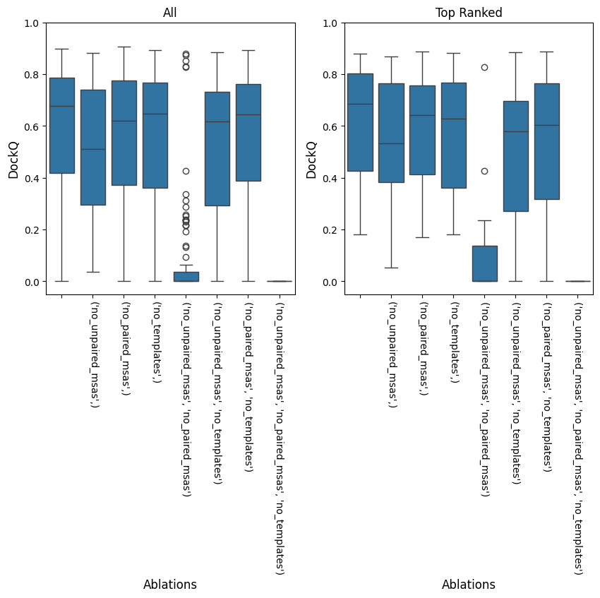
[22]:
sns.displot(dockq_scores, col='ablations', x='DockQ', kind='hist')
sns.displot(dockq_scores.query('top_rank'), col='ablations', x='DockQ', kind='hist')
plt.show()
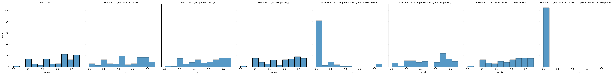
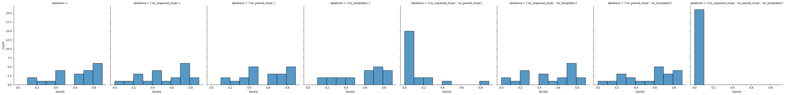
[23]:
for title, data in zip(('All', 'Top Ranked'), (dockq_scores, dockq_scores.query('top_rank')), strict=True):
print(title)
ipy_display.display(pg.kruskal(data, dv='DockQ', between='ablations'))
groups = list(data.groupby('ablations')['DockQ'])
significance_level = 0.05 / len(groups)
results = collections.defaultdict(list)
for (group1_name, group1), (group2_name, group2) in itertools.combinations(groups, 2):
stat, p_val = stats.ranksums(group1, group2, alternative='two-sided')
results['group1'].append(group1_name)
results['group2'].append(group2_name)
results['stat'].append(stat)
results['p_val'].append(p_val)
results['signficant'].append(p_val < significance_level)
ipy_display.display(pd.DataFrame(results))
print()
All
| Source | ddof1 | H | p-unc | |
|---|---|---|---|---|
| Kruskal | ablations | 7 | 414.319253 | 2.023723e-85 |
| group1 | group2 | stat | p_val | signficant | |
|---|---|---|---|---|---|
| 0 | (no_paired_msas,) | (no_paired_msas, no_templates) | -0.116968 | 9.068854e-01 | False |
| 1 | (no_paired_msas,) | (no_templates,) | 0.024983 | 9.800681e-01 | False |
| 2 | (no_paired_msas,) | (no_unpaired_msas,) | 1.334344 | 1.820910e-01 | False |
| 3 | (no_paired_msas,) | (no_unpaired_msas, no_paired_msas) | 10.738350 | 6.723509e-27 | True |
| 4 | (no_paired_msas,) | (no_unpaired_msas, no_paired_msas, no_templates) | 12.400887 | 2.584478e-35 | True |
| 5 | (no_paired_msas,) | (no_unpaired_msas, no_templates) | 1.385447 | 1.659158e-01 | False |
| 6 | (no_paired_msas,) | -0.842624 | 3.994386e-01 | False | |
| 7 | (no_paired_msas, no_templates) | (no_templates,) | 0.012492 | 9.900333e-01 | False |
| 8 | (no_paired_msas, no_templates) | (no_unpaired_msas,) | 1.420651 | 1.554182e-01 | False |
| 9 | (no_paired_msas, no_templates) | (no_unpaired_msas, no_paired_msas) | 10.696333 | 1.058865e-26 | True |
| 10 | (no_paired_msas, no_templates) | (no_unpaired_msas, no_paired_msas, no_templates) | 12.281647 | 1.136600e-34 | True |
| 11 | (no_paired_msas, no_templates) | (no_unpaired_msas, no_templates) | 1.288920 | 1.974259e-01 | False |
| 12 | (no_paired_msas, no_templates) | -0.868743 | 3.849875e-01 | False | |
| 13 | (no_templates,) | (no_unpaired_msas,) | 1.377498 | 1.683584e-01 | False |
| 14 | (no_templates,) | (no_unpaired_msas, no_paired_msas) | 10.699739 | 1.020648e-26 | True |
| 15 | (no_templates,) | (no_unpaired_msas, no_paired_msas, no_templates) | 12.400887 | 2.584478e-35 | True |
| 16 | (no_templates,) | (no_unpaired_msas, no_templates) | 1.294598 | 1.954589e-01 | False |
| 17 | (no_templates,) | -0.860794 | 3.893514e-01 | False | |
| 18 | (no_unpaired_msas,) | (no_unpaired_msas, no_paired_msas) | 10.546432 | 5.276301e-26 | True |
| 19 | (no_unpaired_msas,) | (no_unpaired_msas, no_paired_msas, no_templates) | 12.520126 | 5.794311e-36 | True |
| 20 | (no_unpaired_msas,) | (no_unpaired_msas, no_templates) | 0.019305 | 9.845975e-01 | False |
| 21 | (no_unpaired_msas,) | -2.242834 | 2.490750e-02 | False | |
| 22 | (no_unpaired_msas, no_paired_msas) | (no_unpaired_msas, no_paired_msas, no_templates) | 4.054136 | 5.031993e-05 | True |
| 23 | (no_unpaired_msas, no_paired_msas) | (no_unpaired_msas, no_templates) | -10.443091 | 1.575940e-25 | True |
| 24 | (no_unpaired_msas, no_paired_msas) | -10.824657 | 2.630629e-27 | True | |
| 25 | (no_unpaired_msas, no_paired_msas, no_templates) | (no_unpaired_msas, no_templates) | -12.400887 | 2.584478e-35 | True |
| 26 | (no_unpaired_msas, no_paired_msas, no_templates) | -12.400887 | 2.584478e-35 | True | |
| 27 | (no_unpaired_msas, no_templates) | -2.198545 | 2.791026e-02 | False |
Top Ranked
| Source | ddof1 | H | p-unc | |
|---|---|---|---|---|
| Kruskal | ablations | 7 | 80.641404 | 1.019214e-14 |
| group1 | group2 | stat | p_val | signficant | |
|---|---|---|---|---|---|
| 0 | (no_paired_msas,) | (no_paired_msas, no_templates) | 0.213824 | 8.306845e-01 | False |
| 1 | (no_paired_msas,) | (no_templates,) | -0.113201 | 9.098713e-01 | False |
| 2 | (no_paired_msas,) | (no_unpaired_msas,) | 0.213824 | 8.306845e-01 | False |
| 3 | (no_paired_msas,) | (no_unpaired_msas, no_paired_msas) | 4.691546 | 2.711489e-06 | True |
| 4 | (no_paired_msas,) | (no_unpaired_msas, no_paired_msas, no_templates) | 5.546841 | 2.908775e-08 | True |
| 5 | (no_paired_msas,) | (no_unpaired_msas, no_templates) | 0.566004 | 5.713910e-01 | False |
| 6 | (no_paired_msas,) | -0.666627 | 5.050103e-01 | False | |
| 7 | (no_paired_msas, no_templates) | (no_templates,) | -0.389914 | 6.966002e-01 | False |
| 8 | (no_paired_msas, no_templates) | (no_unpaired_msas,) | 0.213824 | 8.306845e-01 | False |
| 9 | (no_paired_msas, no_templates) | (no_unpaired_msas, no_paired_msas) | 4.490300 | 7.112306e-06 | True |
| 10 | (no_paired_msas, no_templates) | (no_unpaired_msas, no_paired_msas, no_templates) | 5.282705 | 1.272900e-07 | True |
| 11 | (no_paired_msas, no_templates) | (no_unpaired_msas, no_templates) | 0.377336 | 7.059238e-01 | False |
| 12 | (no_paired_msas, no_templates) | -0.742094 | 4.580302e-01 | False | |
| 13 | (no_templates,) | (no_unpaired_msas,) | 0.490537 | 6.237540e-01 | False |
| 14 | (no_templates,) | (no_unpaired_msas, no_paired_msas) | 4.741857 | 2.117681e-06 | True |
| 15 | (no_templates,) | (no_unpaired_msas, no_paired_msas, no_templates) | 5.546841 | 2.908775e-08 | True |
| 16 | (no_templates,) | (no_unpaired_msas, no_templates) | 0.842717 | 3.993866e-01 | False |
| 17 | (no_templates,) | -0.364758 | 7.152919e-01 | False | |
| 18 | (no_unpaired_msas,) | (no_unpaired_msas, no_paired_msas) | 4.616078 | 3.910594e-06 | True |
| 19 | (no_unpaired_msas,) | (no_unpaired_msas, no_paired_msas, no_templates) | 5.546841 | 2.908775e-08 | True |
| 20 | (no_unpaired_msas,) | (no_unpaired_msas, no_templates) | 0.339602 | 7.341559e-01 | False |
| 21 | (no_unpaired_msas,) | -0.943340 | 3.455069e-01 | False | |
| 22 | (no_unpaired_msas, no_paired_msas) | (no_unpaired_msas, no_paired_msas, no_templates) | 1.848947 | 6.446548e-02 | False |
| 23 | (no_unpaired_msas, no_paired_msas) | (no_unpaired_msas, no_templates) | -4.339365 | 1.428949e-05 | True |
| 24 | (no_unpaired_msas, no_paired_msas) | -4.792169 | 1.649882e-06 | True | |
| 25 | (no_unpaired_msas, no_paired_msas, no_templates) | (no_unpaired_msas, no_templates) | -5.282705 | 1.272900e-07 | True |
| 26 | (no_unpaired_msas, no_paired_msas, no_templates) | -5.546841 | 2.908775e-08 | True | |
| 27 | (no_unpaired_msas, no_templates) | -1.069119 | 2.850161e-01 | False |
[24]:
CAPRI_ACCEPTABLE_CUTOFF = 0.23
CAPRI_MEDIUM_CUTOFF = 0.49
CAPRI_HIGH_CUTOFF = 0.80
def get_capri_classification(dockq: float) -> str:
if dockq < CAPRI_ACCEPTABLE_CUTOFF:
return 'Incorrect'
if CAPRI_ACCEPTABLE_CUTOFF <= dockq < CAPRI_MEDIUM_CUTOFF:
return 'Acceptable'
if CAPRI_MEDIUM_CUTOFF <= dockq < CAPRI_HIGH_CUTOFF:
return 'Medium'
return 'High'
[25]:
dockq_scores['capri_classification'] = dockq_scores['DockQ'].map(get_capri_classification)
[ ]:
def plot_capri_classification(dockq_scores: pd.DataFrame, ax: Axes | None = None) -> Axes:
order = ['High', 'Medium', 'Acceptable', 'Incorrect']
colours = {
'High': '#7f0d0d',
'Medium': '#ff1a1a',
'Acceptable': '#ff7f7f',
'Incorrect': '#e6e6e6',
}
capri_classification = dockq_scores.groupby('ablations')['capri_classification'].value_counts(normalize=True) * 100
capri_classification.name = 'percent'
capri_classification = capri_classification.reset_index()
capri_classification = capri_classification.pivot_table(
index='ablations', columns='capri_classification', values='percent'
)
capri_classification = capri_classification.reindex(columns=order, fill_value=0)
capri_classification = capri_classification.sort_index(
key=lambda idx: idx.map(
lambda name: (
next(i for i, entry in enumerate(possible_ablations) if name == entry)
if isinstance(name, tuple)
else -1
)
)
)
plot_ax = capri_classification.plot(
kind='bar',
stacked=True,
color=[colours[col_name] for col_name in order],
width=0.8,
edgecolor='none',
legend=False,
ax=ax,
)
plot_ax.set_ylim(0, 100)
plot_ax.yaxis.set_major_formatter(PercentFormatter(xmax=100))
plot_ax.set_ylabel('Success rate', fontsize=12)
plot_ax.set_yticks([0, 25, 50, 75, 100])
plot_ax.set_xlabel('')
return plot_ax
[ ]:
fig, axes = plt.subplots(1, 2, figsize=(10, 7.5), constrained_layout=True)
for ax, title, data in zip(axes, ('All', 'Top Ranked'), (dockq_scores, dockq_scores.query('top_rank')), strict=True):
ax.set_title(title)
plot_capri_classification(data, ax=ax)
handles, labels = axes[0].get_legend_handles_labels()
fig.legend(handles, labels, bbox_to_anchor=(1.15, 1))
plt.show()
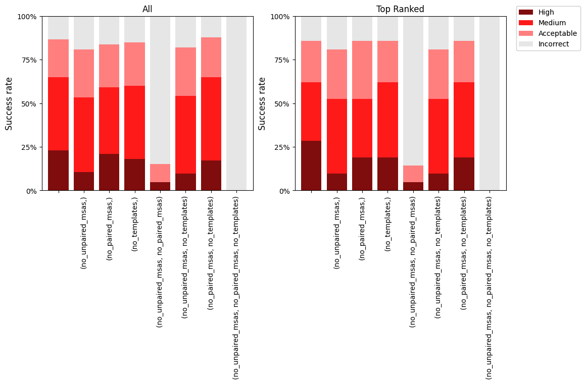